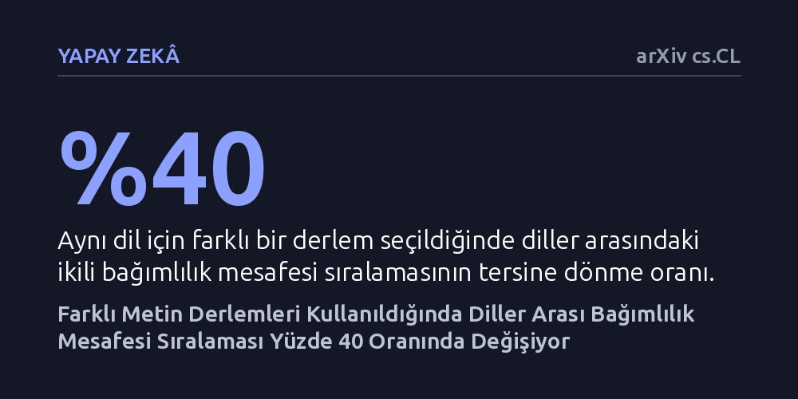

YAPAY-ZEKA · arXiv cs.CL · 2026-09-08
Araştırmacılar, dillerdeki ortalama sözcük bağımlılık mesafesinin kullanılan metin derlemine göre değişip değişmediğini 38 dil çiftinde inceledi. Sonuçlar, derlem değiştirildiğinde diller arasındaki sıralamanın neredeyse yüzde 40 oranında tersine döndüğünü ve bu ölçümün sabit bir dil özelliği olmadığını gösterdi.
Dillerin sözdizimsel zorluğunu tek bir metin arşivine bakarak kıyaslamanın yanıltıcı olabileceğini, çünkü diller arası sıralamaların seçilen metin derlemine göre büyük ölçüde değiştiğini ortaya koyuyor.

Hesaplamalı dilbilim çalışmalarında araştırmacılar, dillerin bilişsel işleme yükünü ve sözdizimsel yapısını anlamak için sıklıkla ortalama bağımlılık mesafesi ölçümüne başvurur. Bu ölçüm, bir cümlede dilbilgisel olarak birbiriyle ilişkili sözcüklerin (örneğin bir fiil ile onun nesnesinin) arasına doğrusal olarak kaç sözcük girdiğini hesaplar. Bugüne kadar yapılan pek çok araştırmada, tek bir metin koleksiyonundan (ağaç bankasından) elde edilen bu değerler doğrudan o dilin değişmez bir özelliği gibi kabul edilmiş ve diller bu sayılara göre birbiriyle kıyaslanmıştır.
Ancak bu yaklaşım ciddi bir varsayım hatası barındırma riski taşır: Bir dilde yalnızca gazete haberlerinden veya edebi metinlerden derlenen tek bir arşiv, o dilin bütün sözdizimsel karakterini ne kadar yansıtabilir? Eğer aynı dil için bağımsız ekiplerce toplanmış başka bir metin havuzuna bakıldığında bambaşka sonuçlar çıkıyorsa, diller hakkında kurulan teorik genellemeler de geçerliliğini yitirebilir. Çalışmanın temel amacı, bu ölçümün gerçekten dile özgü kararlı bir parametre olup olmadığını test etmektir.
Araştırmacı bu soruyu yanıtlamak için Evrensel Bağımlılıklar (Universal Dependencies v2.18) veri tabanından yararlandı. Veri tabanında, aynı dile ait olup bağımsız kaynaklardan derlenmiş en az iki farklı ağaç bankası bulunan 38 dil çifti seçildi. Böylece aynı dil için hazırlanmış iki ayrı derlem arasındaki bağımlılık mesafesi hesaplamalarının birbiriyle ne derece örtüştüğü doğrudan sınandı.
Analizin sağlamlığını güvenceye almak için tek bir yöntemle yetinilmedi. Uyum korelasyonu ve ölçüm yöntemlerini kıyaslamada kullanılan Bland-Altman analizi uygulandı. Ayrıca 'çoklu evren' (multiverse) istatistiksel tasarımı benimsenerek veriler 12 farklı ön işleme ve filtreleme kuralından geçirildi. Bu sayede ortaya çıkacak uyumsuzlukların küçük örneklem dalgalanmalarından mı yoksa derlemlerin yapısal farklarından mı kaynaklandığı ayrıştırıldı.
Elde edilen sonuçlar, aynı dil için bağımsız iki derlem arasındaki uyumun en iyi ihtimalle orta düzeyde kaldığını gösterdi. En dikkat çekici bulgu ise diller arası ikili kıyaslamalarda görüldü: Bir dilde kullanılan ağaç bankası yerine aynı dilin diğer ağaç bankası konulduğunda, diller arasındaki ikili bağımlılık mesafesi sıralamalarının neredeyse yüzde 40'ı tersine döndü. Yani ilk derlemde A dili B dilinden daha uzun bağımlılık mesafesine sahip görünürken, ikinci derleme geçildiğinde bu sıra tam tersine çevrildi.
Derlem seçiminin yarattığı bu farklılık, gruplar arasındaki toplam varyansın yaklaşık yüzde 29'unu açıklıyordu ve basit örnekleme yanılgılarının çok üzerindeydi. Üstelik bu uyumsuzluk, denenen 12 farklı ön işleme senaryosunun tamamında devam etti. Bununla birlikte temel bir evrensel ilke de doğrulandı: İncelenen her ağaç bankasında insanların ilişkili sözcükleri birbirine yakın tutma eğilimi (bağımlılık uzunluğunu en aza indirme ilkesi) korundu; normalleştirilmiş oranlar her durumda 1'in altında kaldı.
Bu bulgular, ortalama bağımlılık mesafesinin bir dilin sabit ve değişmez bir parametresi olmadığını ortaya koyuyor. Ölçülen değerler; dilin genel dilbilgisinin yanı sıra metinlerin türünden (haber, sohbet, resmi belge), üslubundan ve metinleri etiketleyen uzmanların kurallarından doğrudan etkileniyor. İnsan zihninin sözcük mesafesini kısa tutma yönündeki nitel eğilimi evrensel kalsa da, dilleri 'şu dil daha uzun mesafeli, şu dil daha kısa' şeklinde mutlak bir hiyerarşiye sokmak derlem seçimine kurban gitmektedir.
Hesaplamalı dilbilim ve yapay zeka alanında çalışanlar için bu sonuç önemli bir uyarı niteliğindedir. Dil modellerinin değerlendirilmesinde veya diller arası bilişsel çıkarımlarda tek bir derleme dayanarak kesin hükümlere varmak yanıltıcı olabilir. Gelecekteki araştırmaların, dilsel genellemeler yapmadan önce farklı metin türlerini ve derlem biçimlerini hesaba katan çok yönlü değerlendirmeleri standart hale getirmesi gerekmektedir.